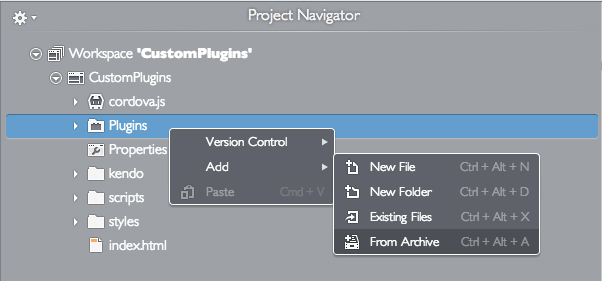
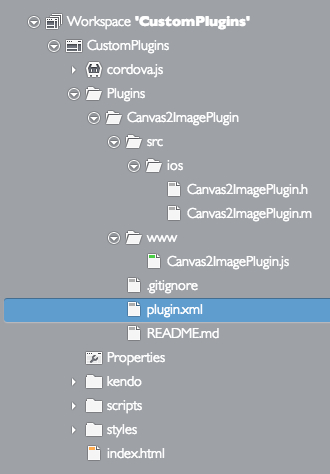
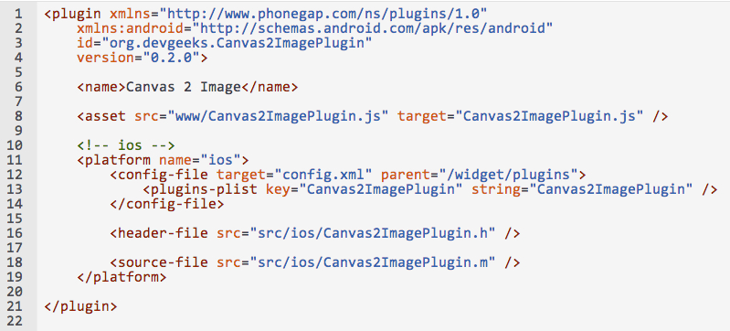
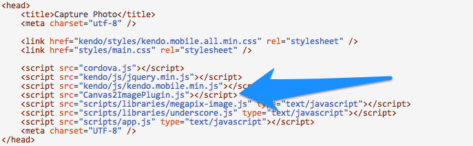
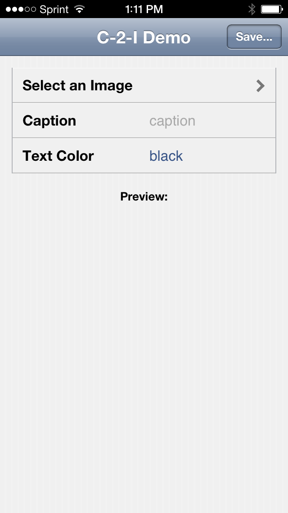
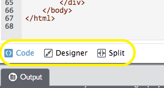

We are very excited about the new features in this release! Especially the fact that Icenium now supports the use of custom Cordova plugins! The key highlights I want to briefly cover from version 1.6 are:
Cordova 2.7.0 was released last month (May) - and contains a number of bug fixes as well as some new features for InAppBrowser, etc. For specifics on what the 2.7.0 release entailed, here are few posts worth checking out:
Say it with me again: Custom. Cordova. Plugins. The beauty of developing hybrid mobile applications using Cordova is the fact that if Cordova doesn't already expose a native API to which you need access, you can write your own plugin to bridge that 'gap'. With custom plugins, you can extend native API access as much as you need and unleash the full native potential of the device. While Icenium has supported a handful of stock plugins for a while, is hasn't been possible to upload custom plugins until now. This has been our most requested feature – now the wait is over! Yes, that sounds you hear is actually angels singing. We won't let those angels keeps us from taking a brief look at using custom plugins, though.
Tommy Williams created the Canvas2Image Cordova plugin for iOS devices as an exercise in saving the contents of an HTML canvas to the camera roll of the device. So - what would it take for us to utilize this plugin in Icenium and deploy it to a device for testing?
First thing's first, let's grab a zip of the plugin from github (by clicking on the zip download option):
I'm using Mist (our browser-based IDE). You'll notice a new folder in our project, named "Plugins". All we need to do is upload our zip to the plugins folder (right-click, choose Add -> From Archive):

Once our zip is uploaded, we'll see a folder for our plugin - something along these lines:

Now here's an important caveat: for a custom Cordova plugin to work with Icenium, it needs to follow the plugman spec. You'll notice below that Canvas2Image plugin included a plugin.xml file at the root of the folder. Let's open that up and check it out:

This file provides the metadata we need to include the plugin in the build. The asset element (line 8) and the platform element (line 11) are of particular importance. The asset element provides the path to our JavaScript library which exposes the native APIs this plugin makes available. The platform element provides the platform-specific assets that should be installed. You can see, in this case, the plugin supports iOS, and includes header-file and source-file elements that point to native source code that should be compiled and included in the build.
| AN IMPORTANT NOTE ON COMPATIBILITY: The plugman spec is evolving - and it's important to recognize that the plugin.xml schema often differs between versions of Cordova. The `plugin.xml` above was modified to work with Cordova 2.7.0 - whereas the one that's in the actual github repository is using an older schema for Cordova 2.2.0. |
I put together a basic sample app – inspired by the demo used by Jonathan Creamer here – that utilizes the Canvas2Image plugin - allowing you to import a photo from your camera roll, add a caption to it (all of which is done on an HTML5 canvas) and then save it back to your camera roll as a new image. Once we've uploaded the zip archive (as we saw above), we need to add the script include to our index.html file. Remember how our plugin.xml file had an asset element which pointed to the Canvas2Image.js JavaScript file? Thanks to that, all we have to do is include a script tag like this in our index.html:

At this point, I can simply write my app as needed, calling the Canvas2Image.js code wherever I need. You can see how the saveCanvasToImage method uses the Canvas2Image plugin here.
In Mist, I chose "Run -> Build -> iOS -> Build (with Provision)" to generate the .ipa installer, which I then downloaded and installed to my device via iTunes.
Let's check out some screenshots:
| Upon opening the app: | Selected Image, Added Caption: |
|  |  |

So there you have it - your first tour through using custom Cordova plugins in Icenium! Before we finish, though, I want to mention a new experimental feature we've added.
Our engineering team has included a UI Designer, which currently only supports Kendo UI Mobile (though we may expand it to support other UI frameworks in the future). As I mentioned above, it's an experimental feature at the moment, but we'd love your feedback as we work over the coming weeks to mature it. You can access the designer when you open an HTML file in project that's using Kendo UI Mobile. For example, if I open the index.html file from our sample application above, you'll see "Code", "Designer" and "Split" tabs at the bottom of the IDE (I'm using Mist in the example below):

The "Code" view is what you've been seeing up until now (and it's still the default view). As you can probably guess, clicking on "Designer" will open WYSIWYG style editor, and clicking "Split" will show "Designer" and "Code" side-by-side:
You'll notice that we've included some of the basic Kendo UI Mobile widgets in the "UI Library" tool pane on the left - these are drag-and-droppable.
When you choose the "Split" view, you have the option to split vertically or horizontally, as well as swap which pane holds the design vs code view. These options expand next to the "Split" on the tab menu at the bottom:
When you're working with the designer, you'll notice that "Outline Inspector" and "Property Inspector" panes will appear docked to the right of the design area. The "Outline Inspector" allows you to quickly traverse the DOM hierarchy of the view you are editing, and "Property Inspector" provides visibility into Kendo-UI-centric attribute and event values on the selected element. In this screenshot, I have the top level view of our sample app selected:
Icenium 1.6 is live, so grab your custom plugins, and start custom-plugging-away on your favorite new mobile app idea. We value your feedback, so please let us know what you think!

About the Author
Jim Cowart is an architect, developer, open source author, and overall web/hybrid mobile development geek. He is an active speaker and writer, with a passion for elevating developer knowledge of patterns and helpful frameworks. Jim works for Telerik as a Developer Advocate and is @ifandelse on Twitter.